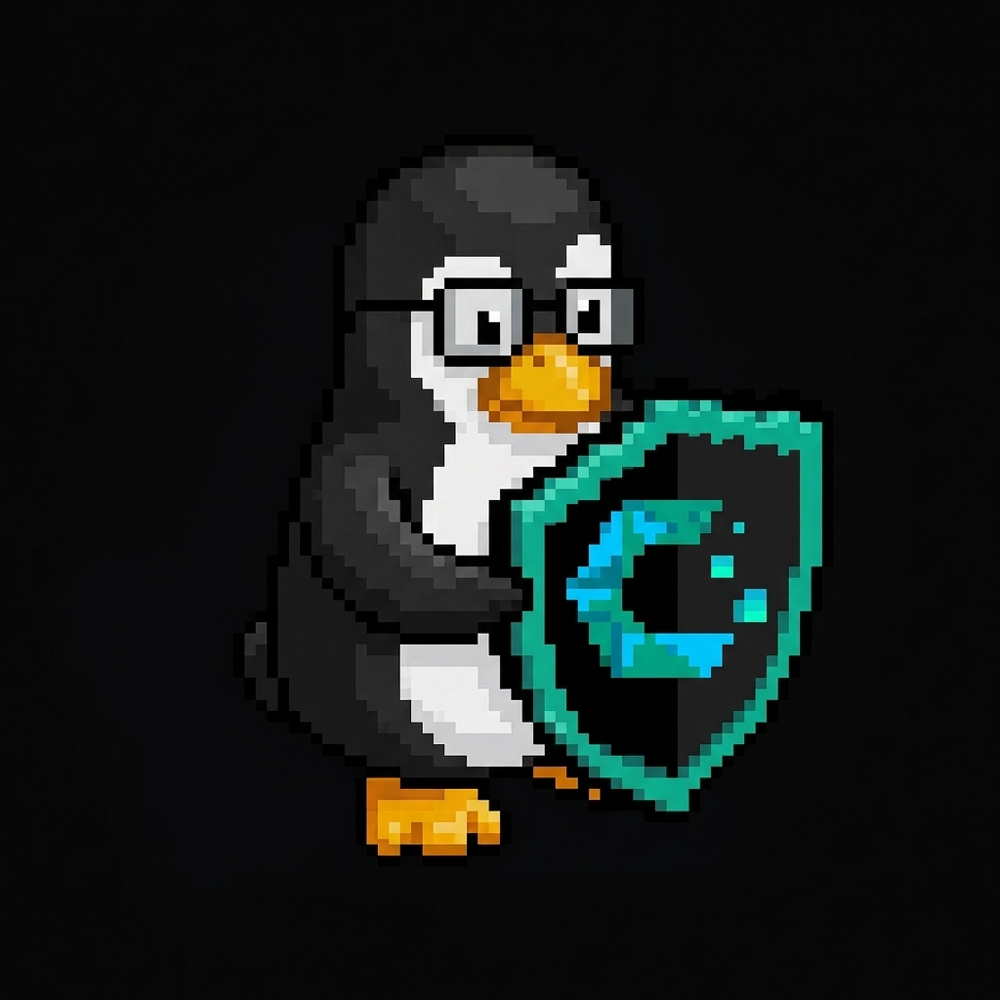

Banco Sudoers
← Volver al portal
Ficha de administrador

Nicolas
Admin del dominio
· grupo
admins
Usuario AD
nicolas
Equipo
pc-nicolas · 192.168.0.52
Área
base de datos
Identidad en el dominio
Usuario
nicolas
Grupos AD
admins
sistemas
srv-dba
Acceso SSH
permitido (AllowUsers) · solo desde admin_ips 192.168.0.52
Equipo
pc-nicolas — 192.168.0.52 (MAC 14:13:33:15:87:9f, reservada en Kea)
A cargo
Miembro del grupo
sistemas
(soporte / mantenimiento del dominio).
Bases de datos
(
srv-dba
): acceso a PostgreSQL — a diferencia de los demás admin, no tiene
srv-files
.
Administración de servicios críticos del server (DHCP/Kea, proxy Nginx).
Supervisión de la plataforma Docker y del correo (Postfix/Dovecot con auth LDAP).
Datos del banco
Institución
Banco Sudoers
Sucursal matriz
dc1.sudoers.lan · 192.168.0.2
Dominio
sudoers.lan (realm SUDOERS.LAN)
Atención
24/7 · sin días de cierre
Cuentas activas
12 usuarios AD (admins + oficina)
CBU
007 0000 0000 0000 0000 0001